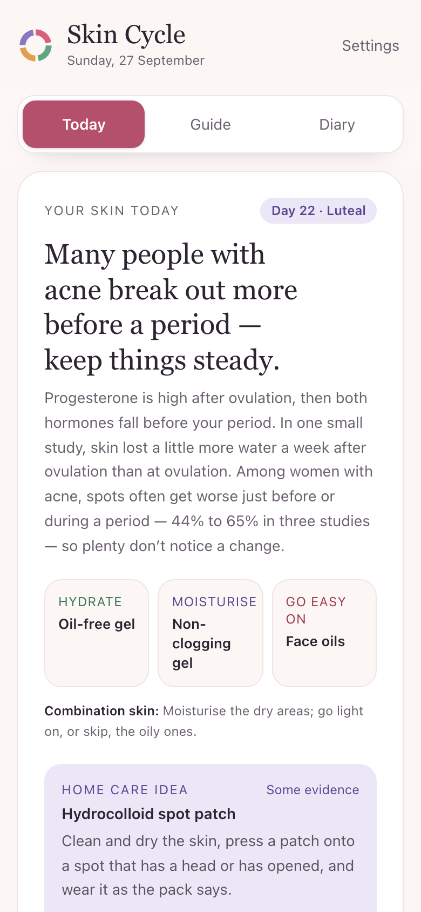
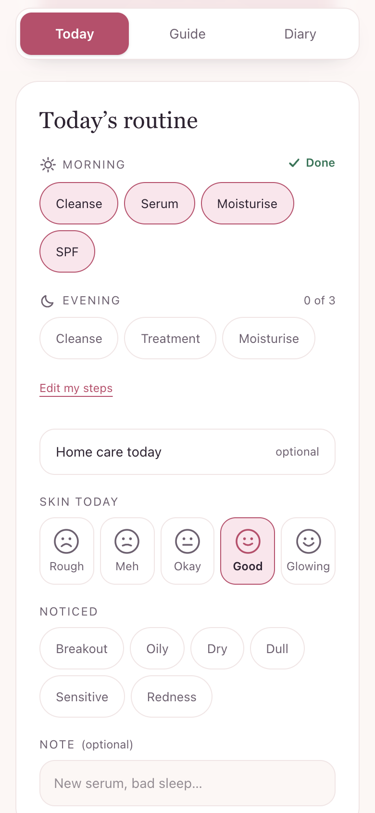
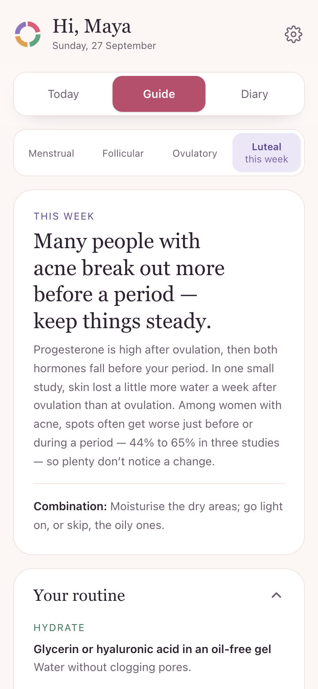
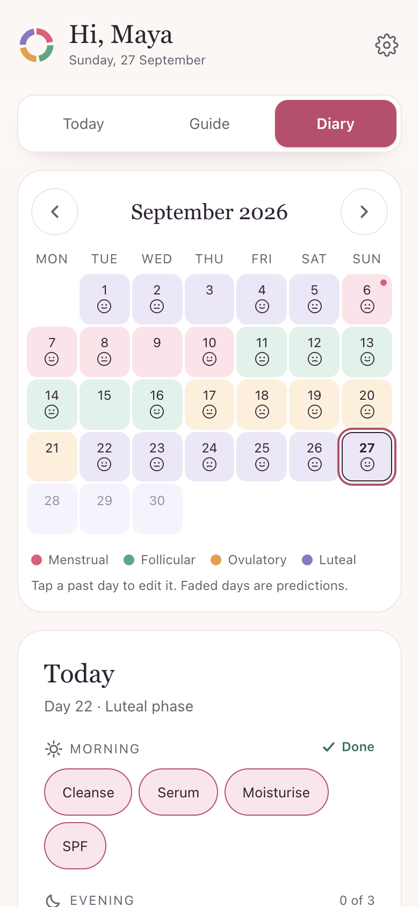

66
Sources behind the tips
AAD, NHS, HSE, DermNet, FDA, published studies and more. Each home remedy shows how strong the evidence is.
- Warm compress Dermatologist advice
- Hydrocolloid patch Some evidence
- Colloidal oatmeal Some evidence
Honey maskCut
Portfolio project · Sonali Krishnani
A private skin diary with tips for each phase of your menstrual cycle. Tips checked against 66 sources.




How it works
Name, date of birth, skin type and cycle.
What to hydrate, moisturise and go easy on.
Tick your routine and rate your skin.
How your skin feels in each phase.
Features
66
AAD, NHS, HSE, DermNet, FDA, published studies and more. Each home remedy shows how strong the evidence is.
Oily, dry, combination or sensitive — the tips change with it.
Pick suggested steps or add your own, in your order.
No account, no server. Your diary stays on your device.
The demo fills in a sample diary. Nothing is saved.